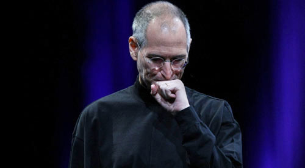
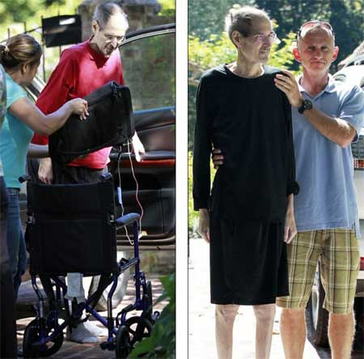

Chương 36

ến đầu năm 2008, cả Jobs và các bác sĩ của ông đều biết rõ rằng khối ung thư của ông đã di căn. Khi họ cắt bỏ khối u ở tuyến tụy vào năm 2004, những tế bào ung thư đã bắt đầu hình thành.
Điều này giúp các bác sĩ của ông xác định được bộ phận nào đã bị phá hủy, và họ đã áp dụng những phương pháp đặc trị được cho là hiệu quả nhất.
Jobs phải dùng tới các liệu pháp giảm đau, thường là các loại thuốc giảm đau có chứa mocphin. Một ngày vào tháng 2 năm 2008, bạn thân của Powell - Kathryn Smith, đang ở cùng họ tại Palo Alto, cùng đi dạo với Jobs. “Ông ấy nói với tôi rằng mỗi khi quá đau ông ấy thường chỉ tập trung vào cơn đau, đi xuyên qua nó và điều đó dường như làm chúng tiêu tan đi”, cô kể lại. Tuy nhiên, điều đó không thực sự chính xác. Khi Jobs bị đau, ông sẽ để cho tất cả mọi người xung quanh biết điều đó.
Có một vấn đề ngày càng trở nên nghiêm trọng mà các nhà nghiên cứu y học đã không lưu ý kỹ càng tới nó giống như khi điều trị ung thư hay giảm đau. Jobs gặp vấn đề về ăn uống và sút cân. Điều này một phần là do tuyến tụy của ông đã bị cắt đi khá nhiều trong khi tuyến tụy chính là bộ phận sản xuất những enzym cần thiết để tiêu hóa đạm và các dưỡng chất. Ngoài ra khối ung thư và moóc-phin trong thuốc giảm đau cũng khiến ông ăn không ngon miệng. Có một yếu tố tâm lý mà các bác sĩ biết rõ: Ngay từ thời thanh niên, ông đã có một nỗi ám ảnh kỳ lạ với chuyện ăn kiêng và thanh tẩy ruột.
Thậm chí cả khi kết hôn và có con, ông vẫn giữ những thói quen ăn uống đó. ông có thể dành hàng tuần chỉ ăn cùng một thứ - salát cà rốt với chanh, hoặc táo - rồi sau đó bỗng dưng cự tuyệt thứ đồ ăn đó và tuyên bố sẽ ngừng ăn chúng, ông tiếp tục nhịn ăn như hồi trẻ và điều này đã khiến Jobs trở thành kẻ cao đạo khi ông luôn giảng giải cho người khác về những chế độ ăn uống hiệu quả mà ông đang theo. Powell cũng từng là người ăn chay khi họ mới cưới, nhưng sau ca phẫu thuật của chồng, bà bắt đầu đa dạng hóa các bữa ăn gia đình với cá và các loại thực phẩm giàu đạm.
Cậu con trai Reed của họ, người cũng từng ăn chay, trở thành một “động vật ăn tạp ngon lành”. Họ biết việc tiếp nhận những nguồn đạm khác nhau rất quan trọng đối với chồng/cha mình.
Họ đã thuê một đầu bếp rất giỏi, Bryar Brown, người từng làm cho Alice Waters của chuỗi nhà hàng Chez Panisse. Brown thường đến vào mỗi buổi chiều và nấu một bữa tối thịnh soạn, ngon lành sử dụng các loại rau xanh và các loại gia vị khác mà Powell trồng trong vườn. Mỗi khi Jobs bất chợt thèm salát cà rốt, mỳ ống với húng quế, hay món súp với xả - Brown luôn kiên nhẫn và lặng lẽ tìm cách chế biến chúng. Jobs là một thực khách vô cùng ngoan cố theo xu hướng có thể đánh giá ngay lập tức bất kỳ món ăn nào dù cho chúng cực ngon hay vô cùng dở. ông có thể cùng lúc nếm hai quả bơ mà đa số mọi người sẽ không phân biệt được và tuyên bố rằng quả này là quả bơ ngon nhất từng được ăn và quả kia thì không thể ăn được.
Đầu năm 2008, cách ăn uống lộn xộn của Jobs càng tệ hơn. Có những đêm ông chỉ ngồi nhìn chằm chằm xuống sàn nhà và từ chối tất cả các món ăn được bày trên bàn dài trong bếp. Khi những người khác đã ăn được nửa bữa, ông đột ngột đứng dậy và bỏ đi, chẳng nói năng gì. Điều đó khiến không khí gia đình trở nên căng thẳng. Họ nhận thấy ông đã sút tới 15 cân trong suốt mùa xuân năm 2008.
Vấn đề sức khỏe của Jobs được công khai vào tháng 3 năm 2008 khi Fortune cho đăng một mẩu tin có tiêu đề “Vấn đề của Steve Jobs”. Mẩu tin tiết lộ rằng ông đang cố điều trị ung thư bằng cách ăn kiêng trong 9 tháng và cho rằng Jobs có liên quan tới tuyên bố về quyền chọn cổ phần chứng khoán Apple. Vì câu chuyện đã bị dàn dựng, Jobs đã mời - hay nói chính xác là triệu tập - chủ biên của Fortune là Andy Serwer tới Cupertino để đề nghị ông ta ngăn thông tin này lại. Jobs nhìn thẳng vào mặt Serwer và hỏi, “Vậy là ông đã tiết lộ rằng tôi là một thằng khốn. Tại sao cái thứ đó lại được gọi là tin tức hả?” Jobs cũng làm tương tự như vậy khi gọi cho sếp của Serwer ở Time, John Huey, từ làng Kona của Hawaii, bằng một điện thoại vệ tinh ông mang theo, ông đồng ý tổ chức một hội nghị các CEO và một phần hội nghị thảo luận về việc các thông tin sức khỏe nên được tiết lộ ở mức độ nào, nhưng chỉ khi Fortune chịu đính chính lại mẩu tin kia. Họ đã không đồng ý.
Khi Jobs giới thiệu iPhone 3G vào tháng 6 năm 2008, vóc dáng gầy gò quá mức của ông đã làm lu mờ hiệu ứng ra mắt sản phẩm. Trên tờ Esquire,, Tom Junod mô tả hình dáng “úa tàn” trên sân khấu là “hốc hác như một tên cướp biển, trong trang phục mà trước giờ luôn là lễ phục thể hiện sự mạnh mẽ của ông”. Apple đã phát đi một thông tin không xác thực rằng việc sút cân là hậu quả của một bệnh “virus thông thường”. Tháng tiếp sau, vì các nghi vấn vẫn tồn tại, công ty tiếp tục phát đi thông tin khác rằng tình trạng sức khỏe của Jobs là “một vấn đề riêng tư”.
Joe Nocera của New York Times đã viết một bài báo tiết lộ việc bưng bít thông tin sức khỏe của Jobs. “Đơn giản là người ta không tin rằng Apple sẽ nói thật về tình hình sức khỏe của giám đốc của họ”, anh viết vào cuối tháng 7. “Dưới thời Jobs, Apple hình thành một văn hóa bảo mật được hỗ trợ họ đắc lực theo nhiều cách - những phỏng đoán về các sản phẩm Apple sẽ tiết lộ tại hội nghị Macworld thường niên đã trở thành một trong những công cụ marketing tốt nhất của công ty này. Nhưng cũng chính văn hóa này hủy hoại việc quản trị doanh nghiệp.” Vì Nocera đã viết bài báo và thấu hiểu chuẩn mực của “một vấn đề riêng tư” từ tất cả các nhân viên Apple, anh lập tức nhận được một cuộc gọi bất ngờ từ chính Jobs. “Steve Jobs đây”, ông gay gắt. “Anh cho rằng tôi là một tên khốn kiêu căng, kẻ đang nghĩ rằng anh coi thường luật pháp. Tôi thì cho rằng anh là kẻ rác rưởi chỉ có toàn những thông tin sai lệch.” Sau màn mở đầu khá ấn tượng đó, Jobs cung cấp một số thông tin về tình trạng sức khỏe của mình với điều kiện Nocera phải giữ kín chúng. Nocera rất tôn trọng lời đề nghị nhưng anh hoàn toàn có thể công bố thông tin đó, trong khi vấn đề sức khỏe của Jobs đã trở nên nghiêm trọng hơn là một “bệnh virus thông thường”, “đó không phải là vấn đề đe dọa tính mạng, và ông ấy không bị tái phát ung thư”. Jobs đã cung cấp cho Nocera nhiều thông tin hơn cả những gì ông muốn nói với hội đồng quản trị và các cổ đông, nhưng đó không phải là tất cả sự thật.
Một phần vì những quan ngại đối với việc sút cân của Jobs, giá cổ phiếu của Apple đã giảm từ 188 đô-la vào đầu tháng 6 năm 2008 xuống còn 156 đô-la vào cuối tháng 7 cùng năm. Mọi thứ càng trở nên tồi tệ hơn vào cuối tháng 8 khi Bloomberg do nhầm lẫn đã phát đi lời cáo phó được chuẩn bị sẵn của Jobs, và sau đó thông tin này xuất hiện cả trên trang Gawker. Jobs đã sử dụng câu nói châm biếm nổi tiếng của Mark Twain trong một chương trình âm nhạc thường niên vài ngày sau đó. “Những thông tin về cái chết của tôi đã được thổi phòng quá mức”, ông nói khi giới thiệu dòng sản phẩm iPod mới. Nhưng bộ dạng hốc hác của ông không làm người ta yên tâm. Đến đầu tháng 10, giá cổ phiếu đã sụt xuống 97 đô-la.

Cũng trong tháng đó, Doug Morris của Universal Music được sắp xếp gặp Jobs tại Apple.
Nhưng thay vào đó, Jobs đã mời ông tới nhà riêng. Morris vô cùng ngạc nhiên khi trông thấy ông rất gầy gò và đau ốm. Lúc đó, Morris sắp được vinh danh trong một chương trình ở Los Angeles do City of Hope tổ chức, với mục đích gây quỹ chống ung thư, và mong muốn Jobs tham gia. Các chương trình từ thiện là một trong những thứ Jobs luôn tránh, nhưng ông đã nhận lời, phần vì Morris và phần vì ý nghĩa của chương trình. Trong chương trình, được tổ chức trong một hội trại lớn trên bờ biển Santa Monica, Morris nói với hai nghìn khách mời rằng Jobs đã mang đến cho nền công nghiệp âm nhạc một cuộc đời mới. Những tiết mục biểu diễn - của steive Nicks, Lionel Richie, Erykah Badu và Akon - tiếp diễn cho tới quá nửa đêm khiến Jobs bị cảm lạnh. Jimmy lovine đưa cho ông một chiếc áo nỉ có mũ và ông đã trùm mũ lên đầu trong suốt buổi tối. “Ông ấy quá ốm, lạnh run và quá gầy”, Morris nhớ lại.
Một nhà báo kỳ cựu của Fortune chuyên viết về công nghệ, Brent Schlender đã rời tạp chí vào tháng 12, và tác phẩm cuối cùng của ông là một bài phỏng vấn chung Jobs, Bill Gates, Andy Grove và Michael Dell. ĐÓ là một bài phỏng vấn rất khó để sắp xếp được, và chỉ vài ngày trước khi nó diễn ra, Jobs đã gọi điện thông báo rút lui. “Nếu họ hỏi tại sao thì cứ nói rằng tôi là một tên khốn”, ông nói. Gates cảm thấy khó chịu, nhưng rồi sau đó phát hiện ra tình trạng sức khỏe của Jobs thực sự như thế nào. “Dĩ nhiên là ông ấy đã có một lý do rất, rất hay”, Gates nói. “ông ấy chỉ không muốn nói gì hết”. Mọi việc càng trở nên rõ ràng khi ngày 16/12, Apple thông báo Jobs hủy bỏ kế hoạch xuất hiện tại sự kiện Macworld vào tháng 1 - diễn đàn mà ông thường tham dự để giới thiệu những sản phẩm quan trọng trong suốt 11 năm qua.
Giới blogger bùng lên những phỏng đoán về sức khỏe của ông, và rất nhiều trong số đó lại là sự thật. Jobs vô cùng giận dữ và cảm thấy bị xúc phạm, ông cũng cảm thấy khó chịu với việc Apple đã không chủ động hơn trong việc phản ứng lại. Do đó, ngày 5/1/2009, ông soạn và phát đi một bức thư ngỏ nhằm đánh lạc hướng, ông xác nhận rằng ông không tham dự sự kiện Macworld vì muốn dành nhiều thời gian hơn cho gia đình. “Như các bạn đã biết, tôi liên tục sút cân trong suốt năm 2008”, ông nói thêm. Các bác sĩ cho rằng họ đã tìm ra nguyên nhân - sự mất cân bằng hoóc-môn đã không giúp tôi hấp thụ những chất đạm giúp cơ thể khỏe mạnh. Những xét nghiệm máu cụ thể đã khẳng định điều này. Cách chữa trị vấn đề này tương đối đơn giản.” Cũng có một chút sự thật ở đây, mặc dù chỉ là một phần nhỏ. Một trong những loại hoóc-môn mà tuyến tụy tiết ra là glucagon, có tác động ngược lại với insulin. Glucagon gây tăng đường huyết. Khối u của Jobs đã di căn vào gan và bắt đầu tàn phá. Thực tế, cơ thể của ông đã tự phá hủy chính nó, do đó các bác sĩ đã kê cho ông dùng những loại thuốc giúp giảm lượng glucagon, ông thực sự mất cân bằng hoóc-môn, nhưng đó là bởi khối ung thư của ông đã di căn vào gan. Cá nhân ông không chấp nhận điều này và ông cũng muốn phủ nhận nó một cách công khai.
Không may, đây lại là một vấn đề mang tính pháp lý bởi ông đang điều hành một công ty đã lên sàn. Nhưng Jobs vẫn rất tức tối với cách mà giới blogger đối xử với ông, và ông muốn đánh trả lại.
Tại thời điểm đó, mặc dù những tuyên bố có vẻ rất lạc quan, nhưng ông thực sự rất ốm và vô cùng đau đớn. Jobs đã phải trải qua một đợt điều trị ung thư khác, có những tác dụng phụ chết người. Da ông trở nên khô và nứt nẻ. Trong các nỗ lực tìm kiếm những cách chữa trị khác, ông đã bay tới Basel, Thụy Sỹ để thử một phương pháp trị liệu bằng bức xạ đã được kiểm nghiệm có tác dụng sản sinh enzym. ông cũng trải qua một phương pháp điều trị thực nghiệm khác tại Rotterdam, được gọi là phương pháp dùng nuclit phóng xạ cho phép tiếp nhận sự kết hợp hai hay nhiều axit amin tạo thành chuỗi.
Sau một tuần liên tiếp nhận được những lời khuyên pháp lý ngày càng kiên quyết, cuối cùng Jobs cũng đồng ý nghỉ việc vì lý do sức khỏe. Ngày 14/1/2009, ông chính thức thông báo điều này trong một bức thư ngỏ gửi cho các nhân viên Apple. Lúc đầu, ông đổ lỗi quyết định này là do tính tò mò tọc mạch của giới blogger và giới báo chí. “Thật không may, sự tò mò về tình hình sức khỏe của cá nhân tôi lại tiếp tục gây ảnh hưởng tới không chỉ riêng tôi và gia đình tôi mà còn tới tất cả những người khác ở Apple”, ông nói. Nhưng sau đó, ông thừa nhận rằng phương pháp điều trị sự “mất cân bằng hoóc-môn” của ông không đơn giản như ông từng nghĩ. “Trong suốt tuần qua, tôi nhận thấy những vấn đề sức khỏe phức tạp hơn tôi tưởng tượng”. Tim Cook một lần nữa nhận trách nhiệm điều hành công việc thường ngày, nhưng Jobs nói rằng ông vẫn tiếp tục giữ vị trí CEO, vẫn tham gia vào những quyết định quan trọng và sẽ trở lại vào tháng 6.
Jobs vẫn tiếp tục tư vấn, trao đổi với Bill Campbell và Art Levinson, những người đang phải kiêm nhiệm hai vai trò, vừa là chuyên gia cố vấn sức khỏe cho riêng ông, vừa là những đồng giám đốc của công ty. Nhưng những người còn lại của hội đồng quản trị không được cung cấp đầy đủ thông tin, và các cổ đông là đối tượng đầu tiên bị đánh lạc hướng. Việc này làm nảy sinh một số vấn đề pháp lý, SEC đã mở một cuộc điều tra về việc công ty có đang cố tình bưng bít thông tin với các cổ đông. Điều này sẽ hình thành một âm mưu lừa dối về tính bảo mật, một trọng tội, nếu công ty tiếp tục cho phép ban bố rộng rãi những thông tin sai lệch hoặc che giấu sự thật có liên quan tới viễn cảnh tài chính của công ty. Do Jobs và sức hấp dẫn của ông có quan hệ mật thiết với sự trở lại của Apple, cho nên vấn đề sức khỏe của ông dường như đã chạm đến ngưỡng này. Tuy nhiên vẫn có một số điểm không rõ ràng trong luật, đó là quyền riêng tư của CEO phải được cân nhắc. Sự cân bằng này đặc biệt khó trong trường hợp của Jobs, người rất coi trọng sự riêng tư của mình và là hiện thân của công ty hơn tất cả các CEO khác, ông đã không làm cho mọi chuyện đơn giản hơn.
ông trở nên rất dễ kích động, thường xuyên vừa khóc vừa lớn tiếng chửi bới bất kỳ ai khuyên ông nên bớt kín tiếng.
Campbell trân trọng tình bạn với Jobs, và ông không muốn nhận nhiệm vụ xâm phạm tới đời tư của Jobs, do đó ông đề nghị hạ cấp xuống chỉ là một giám đốc. “Vấn đề về đời tư vô cùng quan trọng đối với tôi”, về sau ông nói. “ông ấy là bạn của tôi từ hàng chục năm nay.” Cuối cùng các luật sư quyết định rằng Campbell không cần phải rút khỏi hội đồng quản trị nhưng ông không nên giữ chức đồng giám đốc. Vị trí đó của ông được thay thế bởi Andrea Jung của Avon. Cuộc điều tra của SEC kết thúc mà không có kết quả gì, hội đồng quản trị không tiếp xúc với giới truyền thông để bảo vệ Jobs khỏi những cuộc gọi có thể khiến ông tiết lộ thêm thông tin. “Báo chí đang mong chúng tôi buột miệng lộ ra những thông tin cá nhân”, AI Gore nhớ lại. “Việc có đi quá những gì luật pháp yêu cầu hay không thực sự phụ thuộc vào Jobs, nhưng ông ấy rất cứng rắn về việc không muốn đời tư bị xâm phạm. Mong muốn của ông ấy nên được tôn trọng”. Khi tôi hỏi Gore về việc hội đồng quản trị có chuẩn bị gì cho đầu năm 2009, khi vấn đề sức khỏe của Jobs trở nên tệ hơn rất nhiều những gì các cổ đông đang được biết, ông trả lời rằng, “chúng tôi đã thuê luật sư bên ngoài để nghiên cứu xem luật pháp yêu cầu những gì, những trường hợp thực tế thành công và chúng tôi sẽ xử lý chúng bằng tất cả sổ sách. Nghe có vẻ phòng thủ nhưng những lời bình phẩm thực sự làm tôi tức giận.”
Một thành viên trong hội đồng quản trị bất bình. Jerry York, cựu Giám đốc Tài chính của Chrysler và IBM, không tuyên bố bất kỳ điều gì công khai, nhưng đã nói riêng với một phóng viên của Wall Street Journal một cách bí mật, rằng ông vô cùng phẫn nộ khi biết công ty đã giấu diếm tình hình sức khỏe của Jobs vào cuối năm 2008. “Thẳng thắn mà nói thì tôi ước là tôi đã từ chức sau đó.” Khi York mất vào năm 2010, tờ tạp chí đã đưa những thông tin mà ông cung cấp lên báo.
York cũng đã cung cấp cho Fortune những thông tin mật và tạp chí này đã tận dụng cho đăng khi Jobs nghỉ lần thứ ba vì lý do sức khỏe, vào năm 2011.
Một số người ở Apple không tin những câu trích dẫn được cho là của York là chính xác bởi ông không chính thức thể hiện sự phản đối tại thời điểm đó. Nhưng Bill Campbell biết rằng các bài báo đã nói đúng sự thật. York đã phàn nàn với ông về điều này vào đầu năm 2009. “Jerry đã uống nhiều vang trắng hơn bình thường vào đêm khuya, ông gọi cho tôi vào hai hay ba giờ sáng gì đó và nói, „chết tiệt, tôi không mua đống rác rưởi đó vào người về chuyện sức khỏe của ông ấy, chúng ta cần chắc chắn về việc này.‟ Sau đó tôi gọi lại cho ông ấy vào sáng hôm sau và ông ấy nói, „ồ, không vấn đề gì đâu.‟ Một trong những đêm khuya như thế, tôi chắc là ông ấy đã nói chuyện với các phóng viên.”
Memphis
Người đứng đầu nhóm nghiên cứu bệnh ung thư của Jobs là George Fisher của Đại học Stanford, một chuyên gia nghiên cứu hàng đầu về các loại ung thư dạ dày và ung thư ruột. Ông từng cảnh báo Jobs trong nhiều tháng liền rằng ông đang cân nhắc đến việc ghép gan, nhưng đó lại là một trong những yêu cầu mà Jobs nhất quyết từ chối thực hiện. Powell thấy vui vì Fisher vẫn kiên nhẫn chỉ ra những khả năng thành công, vì bà biết rằng những lời động viên lặp đi lặp lại sẽ khiến cho chòng bà cân nhắc đến ý kiến đó.
Cuối cùng thì Jobs cũng bị thuyết phục vào tháng 1 năm 2009, ngay sau khi ông tuyên bố rằng bệnh “mất cân bằng hoóc- môn” của mình có thể được chữa trị dễ dàng. Nhưng có một vấn đề. ông được đưa vào danh sách chờ ghép gan ở California, nhưng một điều chắc chắn là ông khó mà có cơ hội được ghép, số lượng người hiến tặng sẵn có trùng với nhóm máu của ông rất ít. Ngoài ra, những tiêu chuẩn về việc chia sẻ nội tạng được đưa ra bởi United Network - tổ chức xây dựng các chính sách về chia sẻ nội tạng của Mỹ - dành ưu tiên cho những người bị sơ gan và viêm gan hơn là những bệnh nhân ung thư.
Không có trường hợp ngoại lệ nào cho bệnh nhân, kể cả với một người giàu có như Jobs, có thể chen ngang vào danh sách, và ông cũng không làm thế. Người nhận sẽ được chọn lựa dựa trên thang điểm MELD (Mô hình bệnh gan giai đoạn cuối) - sử dụng những kết quả kiểm tra trong phòng thí nghiệm về lượng hoóc-môn để cân nhắc mức độ khẩn cấp của một ca ghép gan, và phụ thuộc vào thời gian người đó đã chờ. Mỗi ca hiến tặng đều được kiểm tra chặt chẽ, dữ liệu được công bố trên các trang web công cộng (optn.transplant.hrsa.gov), và bạn có thể theo dõi tình trạng của mình trong danh sách vào bất kỳ lúc nào.
Powell trở thành người canh chừng tất cả các trang web hiến tặng nội tạng, đêm nào cũng kiểm tra xem còn bao nhiêu người trong danh sách chờ, xem các bảng điểm MELD và thời gian họ đã chờ đợi. “Bạn có thể thực hiện phép tính, việc mà tôi đã làm, và kết quả là phải lâu sau tháng 6 anh ấy mới có cơ hội được ghép gan ở California, trong các bác sĩ dự đoán gan của anh ấy chỉ trụ được đến tháng 4”, bà nhớ lại. Vì vậy, bà bắt đầu đặt ra hàng loạt câu hỏi và phát hiện ra rằng họ được phép đăng ký vào danh sách chờ ở hai bang khác nhau tại cùng một thời điểm. Có khoảng 3% bệnh nhân tiềm năng làm điều này. Các quy định không hạn chế việc đăng ký nhiều danh sách chờ, mặc dù những người chỉ trích cho rằng đó là chính sách ưu ái người giàu, nhưng việc này cũng rất khó khăn. Có hai yêu cầu chính: Bệnh nhân tiếp nhận phải có khả năng tới bệnh viện lựa chọn trong vòng 8 tiếng, điều này thì Jobs có thể làm được vì có máy bay riêng: và các bác sĩ tại bệnh viện đó phải kiểm tra bệnh nhân trước khi đưa người đó vào danh sách chờ.
George Riley, một luật sư từ San Francisco, người thường làm việc cho Apple như một luật sư ngoài, là một quý ông Tennessee rất chu đáo và ngày càng trở nên thân thiết với Jobs. Bố mẹ anh đều là bác sĩ của Viện Đại học Methodist tại Memphis, anh được sinh ra ở đây, và là bạn của James Eason - người đang điều hành một viện cấy ghép tại đây. Cơ sở của Eason là một trong những địa chỉ tốt nhất và đông nhất trên cả nước Mỹ. Năm 2008, anh và nhóm làm việc của mình đã tiến hành 121 ca ghép gan. Anh không gặp khó khăn gì khi cho phép người ở những nơi khác đăng ký vào danh sách chờ tại Memphis. “Đó không phải là lách luật”, anh nói. “Đó là cách mọi người lựa chọn nơi chăm sóc sức khỏe của mình. Một vài người đã rời Tennessee tới California hoặc một nơi nào khác để tìm kiếm các phương pháp chữa trị. Bây giờ thì chúng tôi lại có những bệnh nhân từ California tìm đến Tennessee.” Riley đã sắp xếp cho Eason bay tới Palo Alto và thực hiện công việc kiểm tra theo yêu cầu kia.
Cuối tháng 2 năm 2009, Jobs đã có được một vị trí an toàn trong danh sách ở Tennessee (và một vị trí nữa ở California), và giai đoạn chờ đợi trong lo lắng bắt đầu. Vị trí của ông đã tiến nhanh trong tuần đầu tiên của tháng 3, và thời gian chờ được tính là chỉ còn 21 ngày. “Thật mệt mỏi và đáng sợ”,
Powell nhớ lại. “Có vẻ như chúng tôi sẽ không thể ghép gan kịp thời.” Mỗi ngày trôi qua hết sức đau đớn. Tới giữa tháng 3, ông đứng thứ ba trong danh sách, rồi thứ hai, và cuối cùng là thứ nhất. Những ngày đó cũng trôi qua. Có một thực tế lạ lùng là những sự kiện lớn sắp diễn ra - như dịp nghỉ lễ Thánh Patrick hay giải đấu March Madness (Memphis đang có giải thi đấu của năm 2009 và là một vùng đất của tôn giáo) thường chắc chắn mang lại khả năng nhận được bộ phận hiến tặng cao hơn, do sự say sỉn thường gây ra những vụ tai nạn ô tô.
Thực tế, vào ngày 21/3/2009, một chàng trai trẻ chừng 25 tuổi bị chết trong một vụ đâm xe và các nội tạng của anh được hiến tặng. Jobs và vợ bay tới Memphis, hạ cánh trước 4 giờ sáng và gặp Eason. Một chiếc ô tô đã đợi sẵn ở ngay phần đường còn rải đá dăm. Mọi thứ đều đã được chuẩn bị sẵn nên các giấy tờ thủ tục cũng được hoàn tất ngay khi họ tới bệnh viện.
Ca phẫu thuật cấy ghép đã diễn ra thành công nhưng vẫn chưa làm mọi người yên tâm. Khi các bác sĩ lấy gan của ông ra, họ nhìn thấy nhiều đốm trên phúc mạc - một màng mỏng bao phủ các cơ quan nội tạng. Hơn nữa, có rất nhiều khối u ở khắp gan, điều này có nghĩa là chắc chắn khối ung thư đã di căn sang những bộ phận khác nữa. Rõ ràng nó đang biến đổi và phát triển nhanh chóng.
Họ lấy mẫu ròi lập bản đồ gen.
Vài ngày sau, họ cần thực hiện một thủ tục khác. Jobs từ chối mọi lời khuyên dù rằng họ nói sẽ không cắt bỏ dạ dày của ông. Khi họ cho ông dùng thuốc an thần, họ nhận thấy một số thức ăn bị đẩy vào phổi của ông và gây viêm phổi. Tại thời điểm đó, họ đã tưởng ông sắp chết. Như ông kể lại sau này:
Tôi gần như đã chết bởi những thủ tục thường lệ đó. Laurene luôn có mặt ở đó và các con tôi cũng bay tới, bởi họ nghĩ tôi không thể qua được đêm đó. Reed lúc đó đang ở trường cùng một trong các anh trai của Laurene. Chúng tôi đã đón nó ở gần Dartmouth bằng máy bay riêng và cho chúng biết chuyện gì đang xảy ra. Các con gái tôi cũng được đón bằng máy bay. Họ đã nghĩ rằng đây có lẽ là cơ hội cuối cùng có thể thấy tôi còn tỉnh táo. Nhưng tôi đã vượt qua được.
Powell chịu trách nhiệm theo dõi việc điều trị, ở trong phòng bệnh cả ngày và quan sát các màn hình máy tính một cách thận trọng. “Laurene giống như một con hổ xinh đẹp luôn ở bên cạnh bảo vệ ông ấy”, Jony Ive - người đã tới thăm ngay khi Jobs được cho phép gặp khách, nhớ lại. Mẹ và ba anh trai của bà ấy đã tới viện vào những thời gian khác nhau để thay nhau ở cùng Laurene.
Chị gái Mona Simpson của Jobs cũng qua lại thường xuyên. Bà và George Riley là những người duy nhất Jobs đồng ý cho thay thế Powell túc trực cạnh giường ông. “Gia đình của Laurene đã giúp chúng tôi chăm sóc bọn trẻ - mẹ và các anh trai của cô ấy rất tốt”, Jobs chia sẻ. “Tôi đã rất yếu và không thể giúp ích được gì. Nhưng những chuyện như thế này đã gắn kết mọi người lại với nhau một cách sâu sắc”.
Powell đến bệnh viện vào 7 giờ sáng mỗi ngày và thu thập các dữ liệu liên quan rồi đưa chúng vào một bảng tính. “Nó rất phức tạp vì có quá nhiều thứ khác nhau đang diễn ra”, bà kể lại.
Khi James Eason và các bác sĩ trong nhóm của ông đến vào lúc 9 giờ, bà sẽ họp với họ để tổng hợp lại tất cả các vấn đề về việc điều trị của Jobs. Vào lúc 9 giờ tối, trước khi rời viện, bà chuẩn bị một báo cáo về từng dấu hiệu quan trọng và các chỉ số đang diễn biến ra sao, cùng với một loạt các câu hỏi mà bà muốn có câu trả lời vào ngày hôm sau. “Việc này giúp não tôi hoạt động hiệu quả và tập trung”, bà kể lại.
Eason đã làm những việc mà không ai ở Stanford từng làm một cách trọn vẹn: chịu trách nhiệm về mọi mặt trong việc điều trị. Vì là người vận hành các thiết bị, anh có thể thực hiện việc hồi phục sau cấy ghép, các xét nghiệm ung thư, điều trị giảm đau, bổ sung các dưỡng chất, phục hồi chức năng và cả điều dưỡng. Thậm chí anh còn qua cửa hàng bán lẻ mua những loại đồ uống tăng lực mà Jobs ưa thích.
Hai trong số các y tá đến từ những thành phố nhỏ thuộc Mississippi, và họ đã trở thành những người mà Jobs yêu quý. Họ là những người phụ nữ từ những gia đình tử tế và không bị ông làm cho sợ hãi. Eason bố trí để họ chỉ nhận giao việc từ Jobs. “Để quản lý được Steve, bạn phải rất kiên trì”, Tim Cook chia sẻ. “Eason đã quản lý được Steve và buộc ông phải làm những việc mà không ai ép được, những điều tốt cho ông ấy thì thường không hề dễ chịu”.

Mặc kệ mọi sự chiều chuộng, Jobs vẫn thường xuyên nổi nóng, ông bực bội vì không thể kiểm soát được chính mình, thỉnh thoảng lại bị ảo giác và trở nên nóng giận. Ngay cả khi ông hoàn toàn tỉnh táo thì cá tính mạnh của ông vẫn trỗi dậy. Có lúc bác sĩ chuyên khoa phổi cố gắng đặt một chiếc mặt nạ oxy lên mặt ông lúc Jobs đang dùng thuốc an thần mạnh. Nhưng Jobs đã xé toạc nó và lầm bầm rằng ông ghét thiết kế của nó và không muốn đắp. Mặc dù hầu như không có khả năng để nói chuyện, nhưng ông vẫn yêu cầu họ mang tới năm chiếc mặt nạ khác nhau và ông sẽ lựa chọn thiết kế mà ông thích. Các bác sĩ liếc nhìn Powell, lúng túng. Cuối cùng bà cũng làm ông bị phân tâm và họ có thể đắp lại chiếc mặt nạ. ông cũng ghét máy oxygen mà họ kẹp vào tay ông. Jobs bảo họ rằng nó xấu xí và quá phức tạp. Ông gợi ý nhiều cách để có thể thiết kế nó đơn giản hơn. “Anh ấy rất quan tâm với từng sắc thái của không gian và các vật thể xung quanh, và điều đó bòn rút tiếp sức lực của anh ấy”, Powell hồi tưởng.
Có một ngày, khi ông vẫn đang lơ lửng giữa trạng thái mê mê tỉnh tỉnh, bạn thân của Powell là Kathryn Smith tới thăm. Mối quan hệ của bà với Jobs không phải lúc nào cũng tốt đẹp nhưng Powell đã nài nỉ Smith tới bên giường. Jobs ra hiệu cho bà lấy một chiếc bút và một tập giấy rồi viết, “tôi muốn có chiếc iPhone của mình”. Smith lôi nó ra khỏi vỏ và đưa cho ông. cầm lấy tay bà, Jobs chỉ cho bà chức năng “lắc để mở” và để bà dùng thử bảng chọn.
Mối quan hệ của Jobs với Lisa Brennan- Jobs, con gái riêng của ông với Chrisann, vốn vẫn căng thẳng. Cô tốt nghiệp Harvard, rồi chuyển tới New York và hiếm khi chuyện trò với bố mình.
Nhưng cô đã bay tới Memphis hai lần, và ông cảm kích về điều đó. “Hành động đó của nó vô cùng ý nghĩa đối với tôi”, ông kể lại. Tiếc là ông đã không nói điều đó với cô ngay lúc đấy. Rất nhiều người quanh Jobs cho rằng Lisa có thể cũng có những đòi hỏi khắt khe như bố cô, nhưng Powell đã chào đón và cố gắng kéo cô lại gần. Bà muốn củng cố lại mối quan hệ này.
Khi Jobs dần hồi phục, bản tính nóng nảy của ông cũng trở lại. ông vẫn còn giữ tính cáu bẳn. “Khi ông ấy bắt đầu hồi phục, giai đoạn cảm kích trôi qua rất nhanh và trở lại ngay cung cách cáu giận thường trực”, Kat Smith kể lại. “Chúng tôi đều tự hỏi rằng liệu khi vượt qua tất cả những chuyện này, ông có trở nên dễ chịu hơn không, nhưng ông đã không trở nên dễ chịu hơn.” Ông vẫn tiếp tục là một kẻ ăn uống cầu kỳ, và điều này trở thành vấn đề hơn bao giờ hết.
Ông chỉ uống các loại sinh tố trái cây và yêu cầu bày ra 7 hoặc 8 loại để ông có thể chọn ra loại mà mình thích, ông đưa thìa vào miệng để thử một miếng nhỏ rồi tuyên bố, “Loại này không ngon. Loại kia cũng không ngon.” Cuối cùng thì Eason phản bác lại. “Ngài biết đấy, đây không phải chuyện khẩu vị”, anh giảng giải. “Đừng có nghĩ đây là đồ ăn. Hãy nghĩ chúng là thuốc.” Tinh thần của Jobs trở nên phấn chấn hơn khi ông được tiếp khách từ Apple tới thăm. Tim Cook tới thường xuyên và kéo ông vào quá trình ra mắt những sản phẩm mới. “Bạn có thể thấy mắt ông ấy sáng lên mỗi khi nói về Apple”, Cook kể lại. “Nó giống như là chiếc đèn được bật lên vậy.” ông vô cùng yêu công ty và ông dường như sống trong niềm hy vọng sẽ quay trở lại. Những chi tiết tiếp thêm sinh lực cho ông ấy. Khi Cook mô tả một thế hệ iPhone mới, Jobs dành một tiếng sau đó để thảo luận không chỉ việc đặt tên nó như thế nào - họ đã thống nhất là iPhone 3GS - mà còn là cỡ chữ và phông chữ của từ “GS”, bao gồm cả việc có nên viết hoa (có) và in nghiêng (không) chúng hay không.
Một hôm, Riley đã bố trí một cuộc viếng thăm ngoài giờ đầy bất ngờ tới Phòng thu âm Sun, nơi Elvis, Johnny Cash, B.B.King và nhiều ca sĩ tiên phong của dòng Rock&Roll từng đến thu âm.
Họ nhận được một chuyến tham quan và phần giới thiệu lịch sử riêng bởi một trong những nhân viên ở đây, người đã ngồi cùng Jobs trên một chiếc ghế băng đầy dấu vết thuốc lá mà Jerry Lee Lewis từng sử dụng. Tại thời điểm đó, dĩ nhiên là trong một nhận định đầy canh cãi, Jobs được coi là người có ảnh hưởng lớn nhất trong nền công nghiệp âm nhạc, nhưng chàng trai đó lại không nhận ra ông trong bộ dạng hốc hác.
Khi họ rời đi, Jobs nói với Riley, “Anh chàng đó thực sự rất thông minh. Chúng ta nên tuyển anh ta cho iTunes.” Do đó, Riley đã gọi cho Eddy Cue, người đã cùng anh chàng đó bay tới California để phỏng vấn và cuối cùng thì tuyển anh ta để xây dựng những phần R&B và Rock&Roll đầu tiên của iTunes. Sau này, khi Riley trở lại Sun studio để gặp lại bạn bè, họ nói điều đó đã được chứng minh, như câu khẩu hiệu của họ, rằng những giấc mơ luôn có thể trở thành hiện thực ở Sun Studio.
Trở lại vào cuối tháng 5 năm 2009, Jobs bay từ Memphis về cùng vợ và chị gái. Họ được Tim Cook và Jony Ive đón tại sân bay San Jose, và hai người đã lên tận máy bay ngay khi nó vừa hạ cánh. “Bạn có thể nhận thấy niềm hào hứng trong mắt ông ấy khi quay trở lại”, Cook kể. “ông ấy đã phải chiến đấu với bệnh tật và giờ thì đang rất háo hức làm việc.” Powell mở một chai rượu táo sủi bọt và chúc mừng chòng, ai nấy đều rất phấn khởi. Ive uống cạn ly một cách đầy kích động. Từ sân bay anh đã lái xe tới nhà Jobs và kể cho ông nghe những khó khăn thế nào để mọi việc vẫn vận hành trong lúc ông đi vắng.
Anh cũng phàn nàn về những bài báo cho rằng sự sáng tạo của Apple chỉ phụ thuộc vào Jobs và sẽ biến mất nếu ông không quay lại. “Tôi thực sự cảm thấy bị tổn thương”, Ive nói với Jobs. Cảm thấy như „bị hủy hoại‟ và bị đánh giá thấp vậy”, anh nói.
Jobs cũng từng cảm thấy như vậy trong giai đoạn tâm lý mệt mỏi sau khi trở lại Palo Alto.
Ông bắt đầu đối mặt với suy nghĩ rằng ông không còn là người không thể thiếu đối với công ty. cổ phiếu của Apple vẫn tăng đều trong thời gian vắng ông, tăng từ 82 đô- la khi ông thông báo nghỉ vào tháng 1 năm 2009 lên đến 140 đô-la khi ông trở lại vào cuối tháng 5. Trong một hội nghị bằng điện đàm với các chuyên gia phân tích không lâu sau khi Jobs nghỉ, Cook đã thay đổi từ phong cách lãnh đạm thường thấy để đưa ra một tuyên bố đầy nhiệt huyết rằng tại sao Apple sẽ vẫn tiếp tục bay cao khi Jobs vắng mặt:
Chúng tôi tin tưởng rằng chúng tôi hiện diện trên trái đất này để làm ra những sản phẩm tuyệt vời, và điều đó sẽ không thay đổi. Chúng tôi vẫn không ngừng đổi mới. Chúng tôi tin vào sự đơn giản, chứ không phải những thứ phức tạp. Chúng tôi tin rằng chúng tôi cần phải sở hữu và kiểm soát những công nghệ hàng đầu đằng sau những sản phẩm mà chúng tôi tạo ra, và chỉ thâm nhập vào những thị trường mà chúng tôi có thể mang lại những đóng góp quan trọng. Chúng tôi tin tưởng khi nói “Không” với hàng nghìn dự án để có thể thực sự tập trung vào một số ít những dự án có tầm quan trọng và ý nghĩa đích thực đối với mình. Chúng tôi tin tưởng vào những gắn bó sâu sắc và sự kết hợp của các nhóm làm việc của mình, điều này cho phép chúng tôi sáng tạo theo những cách mà những người khác không thể có. Và, một cách thẳng thắn, chúng tôi sẽ không dừng lại vì bất kỳ điều gì trừ sự xuất sắc của từng nhóm làm việc ở công ty này. Chúng tôi có lòng chân thật để dám thừa nhận khi làm sai và có tinh thần dũng cảm để thay đổi. Và tôi nghĩ rằng, bất kể ai làm công việc này, những giá trị đó đều khắc sâu trong công ty mà Apple sẽ làm vô cùng tốt.
Nghe có vẻ giống như những gì Jobs sẽ nói (hoặc đã nói), nhưng báo giới đã phong tặng nó là “học thuyết Cook”. Jobs đã bị dằn vặt và trầm cảm nặng, nhất là dòng cuối cùng. Ông không biết nên lấy làm tự hào hay tổn thương vì rằng điều đó có thể đúng. Có những lời bàn tán về việc ông sẽ lui về và trở thành chủ tịch chứ không làm CEO nữa. Tất cả những điều đó càng khiến ông có thêm động lực để ra khỏi giường, vượt qua bệnh tật, và bước tiếp những bước đi lớn.
Cuộc họp hội đồng quản trị diễn ra vài ngày sau khi Jobs trở lại và ông đã khiến mọi người ngạc nhiên với diện mạo của mình. Ông bước vào thong thả và có thể đứng hầu như suốt buổi họp.
Tới đầu tháng 6, ông tổ chức những buổi họp thường ngày tại nhà mình, và đến cuối tháng, ông đã trở lại làm việc. Điều gì có thể tuyệt vời hơn thế khi mà ông từng phải đối mặt với cái chết? Các đồng nghiệp của ông nhanh chóng có câu trả lời.
Vào ngày đầu tiên trở lại, ông đã khiến nhóm làm việc tốt nhất của mình choáng váng với hàng loạt cơn thịnh nộ. ông tách những người mà ông không gặp mặt trong vòng sáu tháng ra khỏi nhóm, xé tan một vài bản kế hoạch marketing, và đay nghiến những người có chất lượng công việc kém.
Nhưng những gì thực sự được kể lại là lời tuyên bố mà ông nói với một vài người bạn vào chiều muộn hôm đó. “Hôm nay, tôi đã có thời gian trở lại làm việc tuyệt vời nhất”, ông nói. “Tôi không tin nổi vào cảm hứng sáng tạo mà tôi đang cảm nhận được, cũng như của cả nhóm làm việc.” Tim Cook thì tiếp nhận điều này một cách bình tĩnh. “Tôi chưa bao giờ thấy Steve kiềm chế trong việc diễn tả tầm nhìn và niềm đam mê của mình”, ông kể lại sau này. “Nhưng điều đó cũng tốt.”
Những người bạn kể lại rằng Jobs vẫn giữ tính khí nóng nảy. Trong lúc chờ hồi phục sức khỏe, Jobs đã đăng ký dịch vụ cáp chất lượng cao của Comcast, và một hôm ông gọi Brian Roberts, người điều hành công ty này tới. “Tôi tưởng rằng ông ấy gọi đến để nói điều gì đó tốt đẹp về nó”, Roberts nhớ lại. “Nhưng không phải, ông ấy bảo tôi „Nó thật vớ vẩn‟.” Nhưng Andy Hertzfeld lại ấn tượng rằng, dưới vẻ cộc cằn đó, Jobs thể hiện một sự chân thành hơn. “Trước đây, nếu bạn nhờ Jobs làm một việc gì đó thì chắc chắn ông ấy sẽ làm ngược lại”, Hertzfeld nói. “Ngang ngạnh là bản tính của ông ấy. Còn giờ thì ông ấy đang cố gắng trở nên tốt hơn.” ông công khai trở lại vào ngày 9/9 khi xuất hiện trên sân khấu trong sự kiện âm nhạc mùa thu của công ty. Mọi người đã đứng dậy hoan hô tới gần một phút. Sau đó, ông giở một mẩu giấy ra và nói rằng ông đã được hiến tặng gan. “Tôi không thể có mặt ở đây nếu không có hành động cao thượng đến như vậy”, ông nói, “do đó tôi hy vọng tất cả chúng ta đều có thể cao thượng và chủ động hiến tặng nội tạng.” Sau những giây phút hân hoan - “Tôi đang ở thời kỳ sung sức nhất, tôi đã trở lại Apple và tôi yêu từng ngày trôi qua ở đây” - ông tiết lộ dòng sản phẩm iPod Nano mới, với máy quay video, có chín màu sắc khác nhau của lớp vỏ nhôm đã được oxy hóa. Vào đầu năm 2010, sức khỏe của ông hồi phục gần như hoàn toàn, ông lại lao vào công việc, và năm đó có lẽ là một trong những năm hiệu quả nhất của ông và cả Apple. Ông đã đạt được hai thành công liên tiếp từ khi giới thiệu hai chiến lược kỹ thuật số cốt lõi của Apple: iPod và iPhone. Và bây giờ ông sẽ tiếp tục nhảy vào một chiến lược khác.